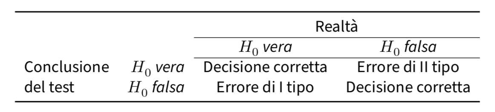

Significatività statistica
Contents
Significatività statistica#
Una regola decisionale comunemente usata, ma che la comunità statistica fortemente sconsiglia, è quella di considerare un risultato come stabile o reale se è “statisticamente significativo” e di considerare i risultati “non significativi” come rumorosi e da trattare con scetticismo. Per i motivi discussi in questo capitolo, è preferibile non concentrarsi sulla significatività statistica, ma il concetto è abbastanza importante nella statistica applicata da meritare di essere trattato qui.
La significatività statistica è convenzionalmente definita come un \(p\)-valore inferiore a 0.05, relativo a qualche ipotesi nulla o valore pre-specificato che indicherebbe l’assenza di effetto, come discusso di seguito nel contesto del test di ipotesi. Facendo riferimento al precedente esempio del QI, usando un linguaggio un po’ approssimativo (ma sostanzialmente corretto) possiamo dire che vengono etichettate come “statisticamente significative” le medie di quei campioni che risultano distanti di almeno due errori standard da un qualche valore atteso (per esempio, 100); altrimenti le medie dei campioni vengono dette “non statisticamente significative”.
Parlando più in generale, una stima si dice “non statisticamente significativa” se il suo valore osservato può essere ragionevolmente spiegato con una semplice variazione casuale.
Facciamo un primo esempio che illustra, senza spiegare i dettagli, il ragionamento frequentista che porta alla conclusione secondo la quale un risultato è, oppure non è, “statisticamente significativo”.
Supponiamo di credere che una moneta sia equilibrata. La lanciamo 20 volte e osserviamo 8 volte testa e 12 volte croce, con una proporzione osservata di eventi “testa” \(p= 0.4\). L’ipotesi nulla è che la moneta sia equilibrata, ovvero \(\pi= 0.5\). Ovviamente, il campione di 8 volte testa e 12 volte croce è solo uno dei possibili campioni che è possibile ottenere lanciando una moneta per 20 volte. Dobbiamo dunque sapere di come variano, in media, i risultati ottenuti da campioni diversi. Tale variabilità va sotto il nome di “errore standard” (ovvero, rappresenta la deviazione standard della statistica in questione nell’universo dei campioni). L’errore standard di una proporzione si calcola come \(\sqrt{\frac{p (1-p)}{n}}\). Utilizzando questa formula, calcoliamo il seguente intervallo: la stima della statistica (nel nostro caso \(p\) = 0.4) \(\pm\) due errori standard:
La statistica osservata dista meno di due errori standard dall’ipotesi nulla del 50%. Di conseguenza, diciamo che il risultato non è “significativamente” diverso dal caso (ovvero, è troppo simile al risultato predetto dall’ipotesi nulla).
Un esempio motivante#
Per introdurre in maggiore dettaglio il concetto di significatività statistica consideriamo una ricerca svolta da [MSS16]. La ricerca di [MSS16] riguarda la musica. L’ascolto musicale è presente in tutte le fasi della vita e anche nell’infanzia. Tra le altre cose, la musica può trasmettere informazioni relative all’appartenenza sociale – pensiamo alle canzoni popolari, ad esempio. [MSS16] si sono chiesti se la musica sia capace di trasmettere messaggi di tipo sociale anche in bambini molto piccoli. Nello specifico, [MSS16] si sono chiesti se i bambini di 5 mesi mostrino una preferenza per individui sconosciuti che cantano una canzone a loro familiare, rispetto ad altri individui sconosciuti che cantano una canzone simile, con le stesse parole e lo stesso ritmo, ma con una diversa melodia. [MSS16] hanno scoperto che, in effetti, le cose stanno veramente così, ma solo quando, nella fase di familiarizzazione, la canzone test veniva cantata dai genitori, ma non quando nella fase di familiarizzazione la stessa canzone veniva cantata da un estraneo. Secondo gli autori, questo mostra che il significato sociale è l’elemento cruciale della preferenza dei bambini, non semplicemente la familiarità con la canzone.
La domanda della ricerca#
La domanda che [MSS16] si sono posti si chiama domanda della ricerca. In psicologia, le domande della ricerca sono delle ipotesi che riguardano i costrutti psicologici. L’ascolto della musica certamente ha a che fare con la psicologia e il significato che attribuiamo all’ascolto della musica è certamente un fenomeno psicologico. Per cui la domanda che [MSS16] si sono posti è certamente una domanda legittima nel contesto della ricerca psicologica.
In psicologia, le ipotesi della ricerca sono delle proposizioni che descrivono le proprietà dei fenomeni psicologici. Tali proposizioni possono essere vere oppure false. Alcune volte le ipotesi della ricerca sono espresse in termini po’ vaghi – nel caso presente, per esempio, ci possono essere idee diverse a proposito di ciò che è musicale e di ciò che non lo è – in ultima analisi le ipotesi della ricerca vengono valutate in base alla loro utilità: si dimostrano utili solo se contribuiscono ad aggiungere qualcosa di importante rispetto a ciò che già sappiamo rispetto al fenomeno psicologico considerato.
Le ipotesi statistiche#
Quello che dobbiamo notare è che non è possibile verificare direttamente le ipotesi della ricerca. Le ipotesi della ricerca sono delle proposizioni relative alle caratteristiche o al funzionamento dei fenomeni psicologici. Tuttavia, in generale, le ipotesi psicologiche non sono abbastanza precise da poter essere valutate direttamente. Quello che i ricercatori possono fare, invece, è valutare delle ipotesi statistiche. Le ipotesi statistiche non coincidono con l’ipotesi della ricerca ma hanno il vantaggio di potere essere espresse in termini probabilistici.
Nell’esperimento di [MSS16], due settimane dopo la fase di familiarizzazione con la canzone test, i bambini che facevano parte dell’esperimento venivano esaminati in laboratorio. Ad essi venivano mostrate due video-registrazioni. Una registrazione presentava un estraneo che cantava la canzone test; l’altra registrazione presentava un secondo individuo non conosciuto dai bambini che cantava una canzone simile alla prima, ma non familiare ai bambini. I ricercatori hanno misurato i tempi di fissazione dello sguardo dei bambini nei confronti di ciascuna delle due video-registrazioni. Nel primo esperimento, la variabile dipendente era uguale alla media, calcolata su 32 casi, della proporzione del tempo di fissazione rivolta al video “familiare” rispetto al tempo di fissazione totale (ovvero la somma del tempo di fissazione del video “familiare” e del tempo di fissazione del video “non familiare”).
Dato che non è possibile valutare direttamente la domanda della ricerca è necessario stabilire una connessione tra l’ipotesi della ricerca e l’ipotesi statistica. Nel caso presente possiamo pensare a tre possibilità.
Se i bambini non hanno alcuna preferenza nei confronti di uno dei due tipi di video-registrazione, allora la media delle proporzioni dei tempi di fissazione di tutti i bambini possibili (ovvero, nella popolazione) sarà uguale a \(\mu = 0.5\), perché, in media, i tempi di fissazione per le due video-registazioni saranno uguali.
Se [MSS16] hanno ragione, allora i bambini preferiranno guardare il video con la canzone familiare piuttosto che il video con la canzone non familiare. Questa situazione si traduce nell’ipotesi statistica \(\mu > 0.5\) (con \(\mu = 0.5\) che rappresenta il livello del caso).
Una terza possibilità è che i bambini siano maggiormente attratti da una melodia non familiare – questo è il contrario di ciò che propongono gli autori della ricerca. Tale possibilità si traduce nell’ipotesi statistica \(\mu < 0.5\).
Le tre ipotesi precedenti sono esempi di ipotesi statistiche. Sono infatti delle proposizioni a proposito dei valori di un parametro di un modello statistico. Nel caso presente, il modello statistico è la distribuzione della proporzione dei tempi di fissazione in una popolazione virtuale di infiniti bambini di sei mesi d’età, come nell’esperiment di [MSS16]. Se consideriamo uno specifico bambino, la proporzione dei tempi di fissazione avrà un certo valore, mentre per un’altro bambino avrà un valore diverso. Il modello statistico considerato descrive la distribuzione dei possibili valori della proporzione del tempo di fissazione nei confronti del video “familiare”. Un tale modello statistico può essere messo in relazione con i dati raccolti dagli sperimentatori perché [MSS16] hanno misurato proprio questo aspetto, ovvero la media della proporzione del tempo di fissazione rivolto al video “familiare”.
Domanda della ricerca e ipotesi statistiche#
Ciò che la discussione precedente dovrebbe mettere in chiaro è che, nella procedura di test di ipotesi, possiamo distinguere tra due tipi di ipotesi molto diverse tra loro: da una parte abbiamo l’ipotesi della ricerca che è un’affermazione sulla natura dei fenomeni psicologici; dall’altra parte abbiamo un’ipotesi statistica che è una proposizione che riguarda il modello generativo dei dati, ovvero le caratteristiche della popolazione. Nell’esempio presente, l’ipotesi della ricerca è “le preferenze sociali dei bambini sono influenzate dalla musica; in particolare, sono favorite dalla familiarità con i materiali musicali”. L’ipotesi statistica, invece, è: \(\mu > 0.5\).
Ciò che dobbiamo avere ben chiaro è che i test vengono applicati alle ipotesi statistiche, non alle ipotesi della ricerca. Ciò significa che, se l’esperimento non viene condotto nella maniera appropriata, allora si spezza il collegamento tra l’ipotesi statistica e la domanda della ricerca. Per esempio, se l’attore che canta la melodia familiare assomiglia ad uno dei genitori del bambino, mentre l’altro attore ha un aspetto molto diverso da quello dei genitori, allora sarebbe molto facile trovare evidenze in supporto dell’ipotesi statistica secondo cui \(\mu > 0.5\); ma questo non avrebbe nulla a che fare con la domanda della ricerca.
Ipotesi nulla e ipotesi alternativa#
Fino a qui il ragionamento è stato semplice: il ricercatore ha un’ipotesi a proposito dei fenomeni psicologici e a tale ipotesi di ricerca corrisponde un’ipotesi statistica che riguarda il meccanismo generativo dei dati. Se il fenomeno psicologico possiede le proprietà suggerite dall’ipotesi della ricerca, allora il ricercatore può aspettarsi che i dati osservati abbiano alcune specifiche caratteristiche. A questo punto, però, il ragionamento diventa contro-intuitivo perché non è possibile verificare direttamente l’ipotesi statistica che corrisponde alla domanda della ricerca.
Apagogia#
In linea di principio non è mai possibile dimostrare direttamente la verità d’una proposizione. Quello che possiamo fare, invece, è dimostrare la verità d’una proposizione in maniera indiretta, ovvero provando la falsità della proposizione contraddittoria.
L’esempio classico è il seguente. Consideriamo la seguente proposizione: “Tutti i cigni sono bianchi” (questo è l’esempio ornitologico preferito da Popper). L’osservazione di un numero qualsiasi di cigni bianchi non è sufficiente a dimostrare la verità di questa proposizione – infatti, ci potrebbe essere da qualche parte un cigno non bianco che non abbiamo osservato (infatti, c’è). D’altra parte, invece, l’osservazione di un solo cigno che non sia bianco (ovvero, per esempio, l’osservazione di un cigno nero proveniente dall’Australia) può falsificare la proposizione considerata. Questa è la logica del falsificazionismo di Popper.
Questo modo di pensare è stato trasferito nella procedura di test di ipotesi di stampo frequentista (ovvero, quello che stiamo discutendo ora). Dato che non possiamo dimostrare vera l’ipotesi statistica associata alla domanda della ricerca, seguiamo il percorso opposto. Ovvero, ci poniamo l’obiettivo di dimostrare falso l’evento complementare a quello specificato dall’ipotesi statistica associata alla domanda della ricerca. L’ipotesi statistica che vorremmo falsificare si chiama “ipotesi nulla” e viene denotata con \(H_0\). Nel caso dell’esempio che stiamo discutendo, l’ipotesi nulla è: \(\mu \leq 0.5\). Si noti che l’ipotesi nulla include tutte le possibili ipotesi statistiche che si possono formulare (ovvero, \(\mu = 0.5\) e \(\mu < 0.5\)), ad eccezione di quella che è associata all’ipotesi della ricerca (ovvero, \(\mu > 0.5\)).
In pratica, ciò che stiamo facendo qui è dividere tutti i possibili valori di \(\pi\) in due gruppi: quei valori che sono coerenti con l’ipotesi della ricerca (ovvero, i valori che specificano l’ipotesi alternativa, denotata con \(H_1\)) e quei valori che non sono coerenti con l’ipotesi della ricerca (ovvero, i valori che specificano l’ipotesi nulla).
Avendo detto questo, la cosa importante da riconoscere è che l’obiettivo di un test di ipotesi non è quello di dimostrare che l’ipotesi alternativa è (probabilmente) vera; l’obiettivo è mostrare che l’ipotesi nulla è (probabilmente) falsa. La maggior parte delle persone ritiene che questo modo di ragionare sia piuttosto strano.
La similitudine del processo penale#
Un test di ipotesi è stato paragonato ad un processo penale, ovvero al processo nei confronti dell’ipotesi nulla. Possiamo immaginare che l’ipotesi nulla sia l’imputato, il ricercatore sia il pubblico ministero e il test statistico sia il giudice. Proprio come in un processo penale, c’è una presunzione di innocenza: l’ipotesi nulla si ritiene vera a meno che il ricercatore non dimostri, oltre ogni ragionevole dubbio, che è falsa. Il ricercatore progetta l’esperimento in modo da massimizzare la possibilità che i dati producano una condanna. Il test statistico (ovvero il giudice in questa similitudine) stabilisce le regole che devono essere seguite per giungere al verdetto e queste regole sono pensate per proteggere l’ipotesi nulla – in particolare, per garantire che sia piccola la probabilità di una condanna se l’ipotesi nulla è effettivamente vera. Questo aspetto è importante: all’ipotesi nulla deve essere fornita una qualche forma di protezione, dato che il ricercatore sta cercando disperatamente di dimostrare che è essa è falsa.
Due tipi di errori#
Prima di entrare nei dettagli su come viene costruito un test statistico è utile capire la logica su cui esso è basato. In precedenza abbiamo paragonato il test di ipotesi nulla ad un processo penale, ma ora dobbiamo essere più espliciti. Idealmente, vorremmo costruire il nostro test in modo da non commettere errori. Sfortunatamente, però, questo non è possibile: a volte il ricercatore è sfortunato e finisce per prendere la decisione sbagliata, anche se adotta un processo decisionale razionale. Ad esempio, può succedere che una moneta venga lanciata 10 volte di fila e produca testa tutte le 10 volte. Ciò sembra fornire una prova molto forte del fatto che la moneta è sbilanciata, ma ovviamente c’è una possibilità su 1024 che ciò accada anche se la moneta è equilibrata. In altre parole, nella vita reale dobbiamo sempre accettare la possibilità che le nostre scelte siano sbagliate, anche quando sembrano ragionevoli. Di conseguenza, l’obiettivo dei test delle ipotesi statistiche non è quello di eliminare completamente gli errori (questo è impossibile), ma di ridurre gli errori al minimo.
A questo punto, dobbiamo precisare meglio cosa intendiamo per “errori”. Iniziamo con il rendere esplicito quello che è ovvio: l’ipotesi nulla può essere vera o falsa, e il nostro test ci può condurre a rifiutare l’ipotesi nulla o a non rifiutarla. La decisione di rigettare o non rigettare l’ipotesi nulla ci espone dunque al rischio di commettere uno di due tipi di errore, come indicato nella figura seguente. L’errore di I tipo, denotato con \(\alpha\), è quello che commettiamo se rigettiamo l’ipotesi nulla quando essa è vera; l’errore di II tipo, denotato con \(\beta\), è quello che commettiamo se accettiamo l’ipotesi nulla mentre invece è vera l’ipotesi alternativa.

Errore di I tipo: la protezione dei diritti dell’imputato#
In precedenza abbiamo paragonato il test statistico ad un processo penale. Infatti, un processo penale richiede che si stabilisca la colpevolezza dell’imputato “oltre ogni ragionevole dubbio”. Le regole del processo penale sono state progettate per garantire che non ci sia (quasi) nessuna possibilità di condannare ingiustamente un imputato innocente: il processo penale è progettato (almeno in teoria) per proteggere i diritti dell’imputato. Detto in altri termini, il processo penale non mette sullo stesso piano i due tipi di errore che si possono commettere: punire un innocente o assolvere un colpevole. L’errore che consiste nel punire un innocente viene considerato assai più grave di quello che porta ad assolvere un colpevole.
Un test statistico fa praticamente la stessa cosa: i test di ipotesi statistiche sono costruiti in modo tale da controllare la probabilità di un errore di I tipo, con l’obiettivo di mantenerla al di sotto di una certa soglia prefissata. Questa probabilità, denotata con \(\alpha\), viene chiamata “livello di significatività del test”. Usando parole diverse, possiamo dire che un test di ipotesi ha un livello di significatività \(\alpha\) se il tasso di errore di I tipo non è più grande di \(\alpha\). Per convenzione, i ricercatori fanno uso di tre diversi livelli \(\alpha\): 0.05, 0.01 e 0.001.
Errore di II tipo: l’asimmetria del giudizio#
Che dire del tasso di errore di II tipo? In realtà, vorremmo tenere anche quello sotto controllo e denotiamo la probabilità di un errore di II tipo con \(\beta\). Il livello d’errore \(\beta\) viene raramente discusso ed è molto più comune fare riferimento alla potenza del test, che è la probabilità dell’evento complementare, ovvero la probabilità con cui rifiutiamo l’ipotesi nulla quando è realmente falsa, ovvero \(1-\beta\). Un test viene detto “potente” quando è caratterizzato da un piccolo valore \(\beta\) pur mantenendo il livello \(\alpha\) sotto una piccola soglia di probabilità prefissata.
Si noti l’asimmetria qui rivelata: i test di ipotesi sono progettati per garantire che il livello \(\alpha\) sia mantenuto sotto la soglia prefissata, ma non esiste alcuna corrispondente garanzia a proposito di \(\beta\). Sicuramente è preferibile che il tasso di errore di II tipo sia piccolo, e in generale i ricercatori cercano di progettare i loro esperimenti in maniera tale da avere una ragionevole potenza del test (\(1 - \beta\)) – questo si ottiene utilizzando un campione sufficientemente grande – ma nella logica della costruzione del test di ipotesi questo aspetto è secondario rispetto alla necessità di controllare il tasso di errore di I tipo.
Come si costruisce un test di ipotesi?#
Ritorniamo all’esempio relativo allo studio di [MSS16]. In questo caso, sulla base all’ipotesi della ricerca, l’ipotesi nulla può essere formulata come \(H_0: \mu \leq 0.5\). Esaminando un campione di 32 bambini di età media pari a 5.6 mesi, [MSS16] hanno scoperto che, in media, i bambini dirigevano lo sguardo verso il video “familiare” nel 59% del tempo totale di fissazione. Dunque, la media campionaria è \(\bar{X} = 0.59\) Questo è il valore campionario rilevante per il test dell’ipotesi nulla.
Ingenuamente, potremmo pensare che, per decidere se \(H_0\) sia falsa o meno, sia sufficiente confrontare la proporzione calcolata nel campione con il valore \(\pi\) specificato dall’ipotesi nulla. Nel caso presente, l’ipotesi nulla non specifica un unico valore \(\mu\) ma bensì un intervallo di valori: \([0, 0.5]\). I dati campionari specificano un valore \(\bar{X} = 0.56\), ovvero un valore che non è incluso nell’intervallo specificato da \(H_0\). Questo è incoraggiante. Se invece avessimo osservato \(\bar{X} = 0.41\), per esempio, allora non ci sarebbe stato nient’altro da dire: se i dati osservati sono compatibili con \(H_0\) non c’è bisogno di eseguire alcun test statistico – abbiamo già trovato la risposta alla domanda della ricerca.
La variabilità campionaria#
Nel caso dell’esperimento [MSS16] che stiamo discutendo, \(\bar{X}\) non cade nell’intervallo specificato da \(H_0\). Sulla base del valore osservato \(\bar{X} = 0.59\) possiamo dunque concludere che \(H_0\) è falsa? Non così presto. Non è sufficiente trovare una differenza \(\bar{X} - \mu\) nella direzione giusta (cioè positiva, nel nostro caso). È anche necessario tenere in considerazione il fenomeno della variabilità campionaria.
Infatti, la media \(\bar{X}\) osservata in ogni singolo campione di ampiezza \(n=32\) è una variabile aleatoria: in ciascun possibile campione di ampiezza 32 i bambini si comportano in maniera diversa e, di conseguenza, \(\bar{X}\) assumerà un valore diverso da campione a campione. Le statistiche campionarie – nel nostro caso la media \(\bar{X}\) – sono di necessità diverse dai parametri. Ciò a cui noi siamo interessati è la media della popolazione, ovvero \(\mu\), ma sfortunatamente conosciamo solo una sua realizzazione campionaria, ovvero \(\bar{X}\).
Risulta dunque chiaro che la nostra decisione rispetto ad \(H_0\) non può essere unicamente basata sulla differenza tra \(\bar{X} - \mu\). Infatti, è ragionevole pensare che, indipendentemente dal fatto che l’ipotesi nulla sia vera o meno, in alcuni campioni la differenza \(\bar{X} - \mu\) sarà positive mentre in altri campioni sarà negativa. Dobbiamo dunque trovare una procedura che riduca la possibilità di rifiutare \(H_0\) per effetto del caso soltanto. Possiamo (e dobbiamo) fare di meglio che considerare unicamente la differenza \(\bar{X} - \mu\).
Le distribuzioni delle statistiche test#
Il metodo seguito dall’approccio frequentista per affrontare questo problema è quello di costruire la distribuzione della statistica test \(\mathcal{G}_n\), rilevante per il test di \(H_0\), assumendo come vera l’ipotesi nulla. Questo è il concetto più contro-intuitivo di tutta la procedura di test di ipotesi dell’approccio frequentista. Esaminiamolo più in dettaglio.
È ovvio come calcolare la media delle proporzioni del tempo di fissazione in un singolo campione. Il problema è che tale media varia da campione a campione (fenomeno detto della variabilità campionaria). L’approccio frequentista affronta il problema di giungere ad una decisione rispetto ad \(H_0\) tenendo in considerazione la variabilità campionaria nel modo seguente. Il punto di partenza è quello di descrivere le caratteristiche della distribuzione di tutti i possibili valori che la statistica test in esame (nel nostro caso, la media del campione, ovvero \(\bar{X}\)) in tutti i infiniti possibili campioni di ampiezza \(n\) (nel nostro caso \(n\) = 32).
È facile capire che, espresso in questi termini, il problema di stabilire quali sono le caratteristiche di tale distribuzione di medie campionarie non è risolvibile. Senza sapere nient’altro, non possiamo sapere come si distribuisce \(\bar{X}\) nell’universo dei campioni. Ricordiamo però che lo scopo della procedura di test statistici dell’approccio frequentista non è quello di verificare l’ipotesi alternativa: questo non è logicamente possibile. Invece, come suggerito dalla similitudine del processo penale all’ipotesi nulla, l’approccio frequentista si pone l’obiettivo di determinare se ci siano indizi sufficienti per “condannare” l’ipotesi nulla, ovvero, per rigettarla.
In questa reductio ad absurdum, la “presunzione di innocenza” di \(H_0\) corrisponde all’idea che dobbiamo assumere come vera l’ipotesi nulla, fino a prova contraria. Nell’esempio che stiamo discutendo, assumere come vera l’ipotesi nulla significa assumere che il parametro \(\mu\) (la media della popolazione) sia uguale a 0.5. Sulla base di questa assunzione è possibile costruire la distribuzione delle medie dei campioni di ampiezza 32.
Per fare questo, [MSS16] utilizzano (implicitamente) ad un famoso teorema della teoria della probabilità che possiamo descrivere nel modo seguente. Se estraiamo infiniti campioni di ampiezza 32 da una popolazione gaussiana di media \(\mu = 0.5\), allora le medie standardizzate di tali campioni seguiranno la distribuzione teorica di probabilità chiamata distribuzione \(t\) di Student con 32 - 1 = 31 gradi di libertà. Ricordiamo che standardizzare una variabile significa sottrarre dai valori della variabile il suo valore atteso e dividere per la deviazione standard. Si può dimostrare che il valore atteso delle medie dei campioni è uguale alla media della popolazione. Nel caso presente, avremo che
e la standardizzazione si effettua mediante il rapporto
dove \(\bar{X}\) è la media del campione (nel nostro caso, 0.56), \(s\) è la deviazione standard del campione (gli autori riportano \(s\) = 0.179) e \(n\) è l’ampiezza del campione (ovvero, \(n\) = 32). In altre parole, la teoria della probabilità ci dice che la statistica \(T\) si distribuisce come \(t\) di Student con \(\nu = 31\) gradi di libertà. Il punto cruciale è che, se assumiamo come vera l’ipotesi nulla che fissa \(\mu = 0.5\), allora la distribuzione della statistica test \(T\) risulta completamente determinata.
L’approccio frequentista fa uso di un insieme teoremi della teoria della probabilità che descrivono la distribuzione di varie statistiche test. Abbiamo visto sopra la descrizione di un teorema che specifica la distribuzione della statistica test \(T\). Un altro teorema specifica la distribuzione della statistica test che corrisponde alla differenze tra le medie di due campioni indipendenti; tale teorema viene utilizzato nella procedura statistica frequentista chiamata test sulla differenza tra le medie di due campioni indipendenti. Un altro teorema riguarda la distribuzione del rapporto tra la stima di una varianza \(\sigma^2\) basata sulla variabilità delle medie di diversi campioni e la stima della stessa varianza basata sulla variabilità entro i campioni; tale teorema sta alla base del test statistico chiamato ANOVA, o Analisi della varianza. Un altro teorema ancora specifica la distribuzione di una proporzione campionaria; tale teorema sta alla base del test statistico frequentista chiamato test di ipotesi per la proporzione. E così via.
Regioni di rifiuto e regioni di non rifiuto#
Conoscendo la distribuzione dei valori della statistica test (distribuzione che viene determinata assumendo come vera \(H_0\)) diventa poi possibile dividere l’insieme dei valori possibili di \(\mathcal{G}_n\) (il nome che abbiamo assegnato ad una generica statistica test) in due regioni: i valori che ci portano a rigettare \(H_0\) (regione di rifiuto) e quelli che non ci consentono di rigettare \(H_0\) (regione di non rifiuto). Come facciamo a decidere quanto è grande la regione di rifiuto di \(H_0\)? È semplice, basta collocare nella regione di rifiuto i valori estremi della statistica test \(\mathcal{G}_n\), ovvero quelli che sarebbe molto improbabile osservare se \(H_0\) fosse vera. Questo è l’aspetto cruciale della procedura di test di ipotesi, perché così facendo possiamo definire la regione di rifiuto di \(H_0\) come quell’intervallo di valori \(\mathcal{G}_n\) a cui è associata la probabilità \(\alpha\), ovvero la probabilità di commettere un errore di I tipo.
Quando rifiutare l’ipotesi nulla#
Supponiamo che la figura seguente rappresenti la distribuzione campionaria della statistica test \(\mathcal{G}_n\).

Se i dati producono la statistica test \(\mathcal{G}_n^1\), non possiamo rifiutare l’ipotesi nulla \(H_0\). Se invece i dati producono \(\mathcal{G}_n^2\) allora possiamo rifiutare l’ipotesi nulla in favore dell’ipotesi alternativa. Ci sono varie cose da notare.
La regione di rifiuto è costituita da valori lontani dal centro della distribuzione campionaria della statistica test, la quale è stata costruita assumendo come vera \(H_0\).
La regione di rifiuto è situata nelle code della distribuzione. Vedremo in seguito anche degli esempi di regioni di rifiuto unilaterali.
In questa discussione, l’ipotesi alternativa non è menzionata. Rifiutiamo o non rifiutiamo \(H_0\) basandoci unicamente sulla distribuzione campionaria \(f(\mathcal{G}_n \mid H_0)\), cioè sulla probabilità della statistica test condizionata all’ipotesi nulla \(H_0\). L’ipotesi alternativa \(H_1\) viene presa in considerazione quando si sceglie dove posizionare la regione di rifiuto di \(H_0\), ma formalmente non gioca alcun ruolo nel rigettare o meno \(H_0\).
Specificazione delle regioni di rifiuto#
L’ipotesi alternativa \(H_1\) può assumere forme diverse e ciò conduce a specificazioni diverse della regione di rifiuto \(\mathcal{R}\) di \(H_0\). La regione di rifiuto \(\mathcal{R}\) dell’ipotesi nulla corrisponde ai valori collocati agli estremi della distribuzione secondo la direzione dell’ipotesi alternativa \(H_1\).
Se l’ipotesi alternativa è \(H_1: \theta \neq \theta_0\) (dove \(\theta\) è un generico parametro e \(\theta_0\) è uno specifico valore del parametro), allora le evidenze coerenti con l’ipotesi alternativa (e che portano al rigetto di \(H_0\)) sono contenute negli intervalli \([-\infty, \theta_0]\) e \([\theta_0, +\infty]\).
Se l’ipotesi alternativa è \(H_1: \theta < \theta_0\), allora le evidenze coerenti con l’ipotesi alternativa (e che portano al rigetto di \(H_0\)) sono contenute nell’intervallo \([-\infty, \theta_0]\) e l’intera regione di rifiuto \(\mathcal{R}\) è collocata nella coda di sinistra della distribuzione.
Se l’ipotesi alternativa è \(H_1: \theta > \theta_0\), allora le evidenze coerenti con l’ipotesi alternativa (e che portano al rigetto di \(H_0\)) sono contenute nell’intervallo \([\theta_0, \infty]\) e l’intera regione di rifiuto \(\mathcal{R}\) è collocata nella coda di destra della distribuzione.
Si chiamano valori critici i valori che delimitano la regione di rifiuto \(\mathcal{R}\) in un test unilaterale e i valori che delimitano le regioni di rifiuto \(\mathcal{R}\) in un test bilaterale. In un test bidirezionale, i valori critici lasciano in ciascuna delle due code della distribuzione della statistica test una probabilità pari a \(\alpha/2\); in un test unidirezionale lasciano una probabilità pari ad \(\alpha\) in una sola coda. Il risultato di un test si dice statisticamente significativo quando il valore della statistica test ricade nella regione di rifiuto \(\mathcal{R}\).
Supponiamo che \(f(\mathcal{G}_n \mid H_0) = \mathcal{N}(100, 15)\) descriva la distribuzione della statistica test \(x\). Supponiamo inoltre che la regione di rifiuto sia posta nella coda di destra e che il livello di significatività sia \(\alpha = 0.05\). Si trovi il valore critico che delimita la regione di rifiuto di \(H_0\).
Usando scipy la risposta è 124.67.
from scipy.stats import norm
norm.ppf(0.95, 100, 15)
124.67280440427209
La distribuzione \(\mathcal{N}(100, 15)\) è mostrata nella figura seguente. La regione di rifiuto è indicata dall’area ombreggiata.
Supponiamo ora che \(f(\mathcal{G}_n \mid H_0) = \mathcal{N}(100, 15)\) descriva la distribuzione della statistica test \(\mathcal{G}_n\). Supponiamo inoltre che la regione di rifiuto sia ora posta nella coda di sinistra e che il livello di significatività sia \(\alpha = 0.01\). In tali condizioni, il valore critico che delimita la regione di rifiuto di \(H_0\) è 134.89.
norm.ppf(1-0.01, 100, 15)
134.8952181106126
In un ultimo esempio, supponiamo che \(f(\mathcal{G}_n \mid H_0) = \mathcal{N}(100, 15)\) descriva la distribuzione della statistica test \(\mathcal{G}_n\). In questo caso, poniamo una la regione di rifiuto bilaterale con un livello di significatività pari a \(\alpha = 0.05\). Troviamo i valori critici che delimitano la regione di rifiuto di \(H_0\).
l_inf = norm.ppf(0.025, 100, 15)
l_sup = norm.ppf(0.975, 100, 15)
print(l_inf, l_sup)
70.60054023189917 129.39945976810083
La decisione statistica#
Il processo di decisione statistica viene descritto da von Mises (1964) nel modo seguente:
Controllare (checking) o saggiare (testing) ha la forma seguente: se il “risultato osservato” ha una ‘piccola’ probabilità subordinatamente all’ipotesi assunta, respingiamo l’ipotesi. (p. 441)
Ovviamente l’ipotesi a cui von Mises fa riferimento, la cui validità è solo ipotetica, è l’ipotesi nulla.
In pratica, possiamo decidere se rigettare o meno l’ipotesi nulla in due modi: determinando se la statistica test \(\mathcal{G}_n\) cade o meno nella regione di rifiuto (come abbiamo descritto sopra) o confrontando il valore-\(p\) con \(\alpha\) – i due metodi sono equivalenti.
Il valore-p rappresenta la probabilità di osservare un valore della statistica test \(\mathcal{G}_n\) pari a quello effettivamente osservato, o maggiore, quanto l’ipotesi nulla è vera. Se il valore-\(p\) è minore del livello di significatività \(\alpha\), allora la statistica test cade nella regione di rifiuto di \(H_0\) e ciò conduce al rifiuto dell’ipotesi nulla. Tali concetti sono riassunti nella tabella seguente.

Potenza del test#
Ritorniamo ora al concetto di potenza del test. Il livello di significatività e la potenza del test vengono usati per quantificare la qualità dell’inferenza statistica. Idealmente, la procedura di test di ipotesi non dovrebbe giungere alla conclusione sbagliata. Ovvero, non dovrebbe respingere \(H_0\) quando essa è vera e dovrebbe respingere \(H_0\) in favore dell’alternativa quando \(H_1\) è vera. Ma questi sono solo due dei quattro esiti che, in principio, sono possibili, e corrispondono alle probabilità indicate di seguito.

Possiamo pensare a \(H_0\) come all’ipotesi che descrive l’evento “nulla di interessante sta succedendo” – ad esempio, “la moneta è bilanciata”, “il trattamento non è migliore del placebo”, ecc. – e pensare ad \(H_1\) come al caso contrario, ovvero: “sta accadendo qualcosa di interessante”. Quindi la potenza del test, ovvero la probabilità \(1 - \beta\) di rigettare \(H_0\) quando essa è falsa, corrisponde alla probabilità di rilevare qualcosa di interessante, quando qualcosa di interessante è effettivamente successo, mentre il livello di significatività corrisponde alla probabilità di affermare che qualcosa di interessante si è verificato, quando in realtà non è successo nulla di interessante.
Il calcolo della potenza di un test è spesso difficile, perché richiede la conoscenza della distribuzione campionaria di \(\mathcal{G}_n\) quando è vera l’ipotesi alternativa \(H_1\). Nella @fig-altopoterestatistico, l’area ombreggiata sotto \(f(\mathcal{G}_n \mid H_0)\) rappresenta il livello di significatività in un test unilaterale. Ricordiamo che il livello di significatività è la probabilità di rifiutare falsamente l’ipotesi nulla quando essa è vera. Invece, l’area sotto \(f(\mathcal{G}_n \mid H_1)\) a sinistra della linea verticale che delimita la regione ombreggiata rappresenta la potenza del test, ovvero la probabilità che la statistica del test si trovi nella regione di rifiuto di \(H_0\) quando è vera \(H_1\). La figura seguente rappresenta il caso in cui la potenza del test è alta.

Nella figura successiva, invece, viene descritta una situazione in cui la potenza del test è bassa. Entrambi i test hanno lo stesso livello di significatività, ma se \(f(\mathcal{G}_n \mid H_1)\) si sovrappone di molto con \(f (\mathcal{G}_n \mid H_0)\), allora la potenza del test è bassa.

Tipicamente possiamo aumentare la potenza di un test aumentando la numerosità del campione in maniera tale da diminuire la varianza delle distribuzioni della statistica test condizionate a \(H_0\) e ad \(H_1\). In un disegno sperimentale è importante determinare in anticipo il numero di prove o dei soggetti necessari per raggiungere la potenza desiderata.